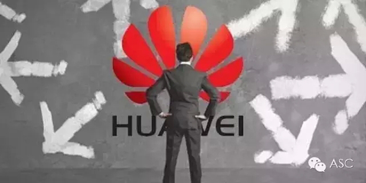

互惠动态
|
|
人生有几个十年？——记华为副总裁辞职信

导读：徐家骏是华为数据中心的头，华为副总裁。从一个普通的公司职员，到年薪千万的华为副总裁，再到离开华为转战百度，徐家骏的十年从业经历和经验对于任何渴望成功的人来说绝对可资借鉴，我们从中也可以一窥华为公司的运作过程和徐的职业规划。
正非兄：
转眼工作十年了，在华为的十年，正是华为从名不出专业圈子到现在成为路人皆知的大公司，高速发展的十年，见证了公司多年的奋斗历程。也投身其中，在大潮中边学边游泳，走到今天。
现在我要离开公司了，准备去开始新的事业，接受全新的挑战，我将要去做的事情，风险很大，很有可能是九死一生，九死后还能不能有一生，也难说。
在开始新的事业之前，想起了对过去的十年做个一个详细的总结。在一个象华为这样高速发展的大企业工作，有时是一种炼狱般的锻炼，如果我能够总结十年的经验和教训，从中学到关键的做事、做人的道理，我想对将来一定大有益处。
这些年来有些人离开公司，写一些东西或书，对公司指手画脚、评头论足、指点江山，对公司的高层领导逐个点评一番，我个人感觉除了带来一些娱乐价值，还有什么益处呢?
公司照样在发展，发展的背后，6万人种种梦想、努力、贡献、牺牲、奋斗、抱怨、不满、沉淀、离去、希望、失落;发展的背后，种种机会、重大决策、危机、失误等等的内在逻辑又岂是局外人说得清楚?我不想多说公司，只是想对自己的工作经历好好反思反思，想想自己做了什么努力，做了什么贡献，做了什么自己最高兴、做了什么自己最受益、学到了什么?
总得说来，我在华为的十年是懵懵懂懂过来的，当初我好像没有什么远大的理想、没有详细的规划，只是想着把一件一件事情做好。通过自己的总结和反思，将来我希望自己能够更加有规划、更加清晰一点。
大概想了想，我觉得有以下几点，是这些年深有体会的经验和教训，值得今后再发扬。
01、"从小事做起，学会吃亏，与他人合作”
这是研究生毕业前最后一堂课，电子电路的老师最后送给我们几句话，虽然我忘了这位老师的名字，但这几句话却至今铭记。在华为的工作实践，越发感受到这简单的几条的道理深刻。从小事做起不是一直满足于做小事，也不是夸夸其谈好高骛远。学会吃亏不是忍受吃亏，是不斤斤计较于一时一地的是非得失，是有勇气关键时候的放弃。
02、"心有多大，舞台就有多大”
我们很多的成功，来自于敢想，敢做，就象我第一次接到问题单，根本不懂，但敢去试，敢去解决，还真的解决了;就像我们做SPES，即使没人、没技术、没积累，还有CISCO等大公司也在做，我们也敢做，敢推行，不盲目崇拜或畏惧权威，也取得了成功。当然，这不只是盲目的胆大，心大还意味着积极地关注广大的外部世界，开阔宽容的心胸接受种种新鲜事物。
03、"好好学习，天天向上”
这句话用来形容对IT人的要求，最贴切不过了。真正的成功者和专家都是“最不怕学习”的人，啥东西不懂，拿过来学呗。我们IT现在有个技术大牛谭博，其实他不是天生大牛，也是从外行通过学习成为超级专家的，他自己有一次跟我说，当年一开始做UNIX系统管理员时，看到提示符大吃一惊，因为自己用过多年在UNIX下搞开发都是提示符，从未有过管理员权限。
看看专家的当初就这水平!当年跟我做备份项目时，我让他研究一下ORALCE数据库时点回退的备份和恢复方法，他望文生义，以为数据库的回退是象人倒退走路一样的，这很有点幽默的味道了，但他天天早上起来，上班前先看一小时书，多年积累下来，现在在系统、数据库、开发等多个领域已成为没人挑战的超级专家了。但是，学习绝对不是光从书本学习，其实更重要的是从实践工作中学习，向周边学习。
比如说我在华为觉得学到最重要的一个理念是“要善于利用逆境”，华为在冬天的时候没有天天强调困难，而是提出“利用冬天的机会扭转全球竞争格局”并真的取得成功，如果没有这个冬天，华为可能还要落后业界大腕更多年份;华为在被CISCO起诉时没有慌乱，而是积极应对，利用了这次起诉达到了花几亿美金可能达不到的提高知名度的效果。等等这些，把几乎是灭顶之灾的境遇反而转化为成功的有利条件，对我留下的印象十分深刻，也对公司高层十分佩服。
04、"勇于实践，勇于犯错，善于反思”
很多事情知易行难，关键是要有行动，特别是管理类的一些理论、方法、观念。空谈、空规划一点用处都没有，不如实际把它做出来，做出来后不断反思改进，实实在在最有说服力。没有实践中的反复演练和反思，即使是人人皆知的东西要做好都其实不容易。
举个小例子，比如做管理者要会倾听，我想华为99.9%的管理者都很懂这一点，但实际做的如何呢?华为有多少管理者做到了不打断别人讲话?不急于下结论给定义?不急于提供解决方案?有多少管理者能够做到自然地引导对方表达?问问对方感受?确认自己明白对方?
05、"要有办法、有套路，对问题系统思考、对解决方案有战略性设计”
在前几年的工作中，由于取得了一点成功，技术上也有了一点研究，就开始夜郎自大起来了，后来公司化重金请来了大批顾问，一开始对有些顾问还真不怎么感冒。后来几年公司规模越来越大、IT的复杂性越来越增加的情况下，逐渐理解了很多。
西方公司职业化的专家，做任何事情都有方法论、有套路，甚至于如何开一个会都有很多套路，后来我对这些套路的研究有了兴趣，自己总结出了不少套路并给部门的骨干培训和讨论。在一个复杂的环境下，很多问题已经不能就事论事来研究和解决，非常需要系统性的方法和战略性的眼光。
对于一个组织的运作来讲，制度和流程的设计尤其需要这一点。爱因斯坦说过：
We can't solve problems by using the same kind of thinking we used when we created them.
06、"独立思考，不人云亦云”
公司大了，人多了，混日子也容易了。人很容易陷入随波逐流、不深入业务的境地，而看不到问题和危险。专家有过一个研究，雪崩发生时，一般受害者都是一批一批的，很少有单个人的受害者，原因很简单，单个人在雪崩多发地会相当小心和警觉。
但一个群体，群体越大，每个个体就会有一种虚幻的安全感和人云亦云的判断，但现实是不管群体的力量有多大，雪崩都是不可抵抗的。因此我觉得在大的机构里，保持独立思考的能力尤为重要。
07、"少抱怨、少空谈、积极主动、多干实事”
我曾经是个抱怨很多的愤青，经常容易陷入抱怨之中。但多年的工作使得我有所转变，因为知道了抱怨是最无济于事的。世界上永远有不完美的事情，永远有麻烦，唯一的解决之道是面对它，解决它。
做实实在在的事情，改变我们不满的现状，改变我们不满的自己。实际上也有很多值得抱怨的事情都是我们自己一手搞出来的，比如社会上很常见的是高级干部退下来了，抱怨人心不古、感慨世态炎凉，如果好好去探究一下，原因很可能是他权位在手春风得意时不可一世、视他人如粪土造成的。
08、"对职业负责、对目标负责，对自己负责，成功者往往自觉自律、信守承诺、心无旁骛”
大企业肯定会有绩效考核、会有论功行赏、会有KPI、会有领导指示、甚至会有一点企业政治，但如果我们片面地追求考核成绩、片面追求KPI指标、片面追求权钱利益，片面地对上负责、对别人负责，而不对自己负责、不对自己的目标负责，失去工作的使命感、责任心、热情和好奇心，必将不能达到自己的最佳境界。而一个企业如何能够成功营造一个环境，让每个个体尽量发挥到最佳境界，企业也会战无不胜。
09、"多点人文修养和审美情趣，看起来与工作不怎么相关，其实太相关了“
杰出成就的取得离不开对美的境界的追求，最伟大的科学发现，往往蕴涵着秩序、简洁和美。缺乏一点审美的追求，什么UGLY的事情都敢做、不择手段、凡事凑合，一点都不“高雅”，必将不能长久。
10、"大家好，才是真的好“，关注人，帮助人，真诚待人，厚道做人“
快速发展的现代社会，由于媒体的作用，过分渲染了人与人之间日益冷漠、诡诈的关系，但实际的社会、社区可能真的不是那么回事，起码我来华为之前，对一个大企业中工作的人事关系开始还有点未知的恐惧，但实际上在这个集体中的感觉几乎人人都能开放、真诚相待，关系融洽和谐。
所以关键是我们自己要能够真诚对待他人，在与他人互动中将心比心。当然，工作中的冲突是不可避免的，实际上冲突也是没有必要去避免，甚至很多冲突对组织来讲，是大有益处的。就象夫妻吵一架后感情往往更好。
只要我们掌握两大原则：
1）对事不对人。
2）与人为善。就肯定能把适度的冲突引导到对自己、对组织都有利的方向。
11、开放和分享的态度
在一个高科技公司工作，如果报着保守和封闭的心态，成长肯定会受阻。
12、做好时间管理
在华为工作十年，3650天，工作日3000天左右，这些时间是不是花在最重要的事情上了，有效的、有产出的工作时间究竟有多少，实在值得怀疑。
时间管理是我在华为工作当中最大的教训之一，可能也是公司整体性的问题，工作缺乏计划，经常是面临不断的被打断;或者是不断去打断同事下属;或者是不断的会议、讨论，占去绝大部分的时间;或者是被自己的兴趣所牵引，花大量时间搞一些不着边际的事情;或者是花很多时间在一些细枝末节的事情上，把很难很重要的事情一直拖到非解决不可的地步然后被迫仓促行事。
现在回想，如果真的能管理好这十年时间，我觉得成就应该大很多。
ASC国际互惠生项目公众号ASCCENTER
互惠生最早起源于英、法、德国等自发的青年活动，是指给来自全世界的青年提供一个寄住在他国家庭里体验文化学习语言的机会，如今我们把国外互惠生请来家庭里，照顾自家的孩子，从小培养外文的语言环境，为孩子出国，全家移民打下优良基础，关注个【公众微信号】ASCCENTER了解更多国外有趣资讯。
ASC国际互惠生客服号ASC-CENTER
24小时客服个人微信号，对接家庭与互惠生之间的问题，对互惠生项目有陌生不熟悉或者想了解更多信息的可以关注【个人微信号】ASC-CENTER与客服详细交流。